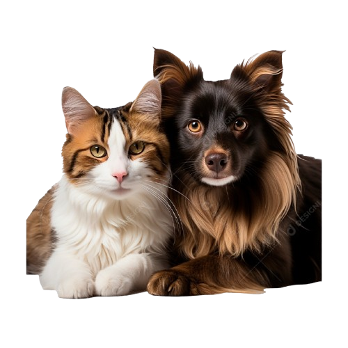
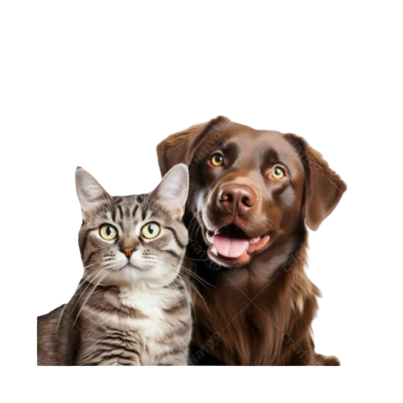
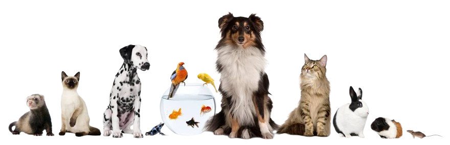
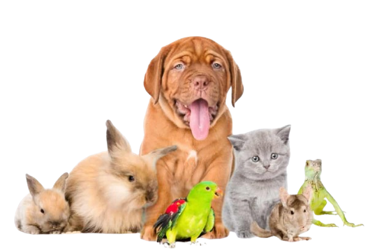
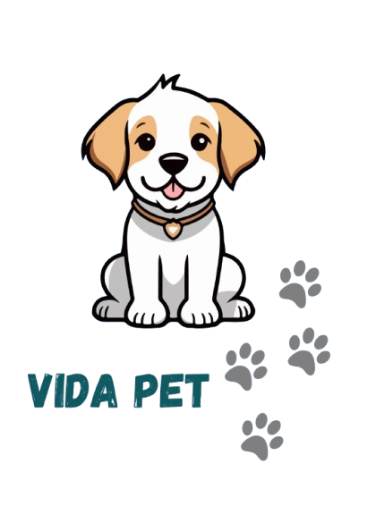
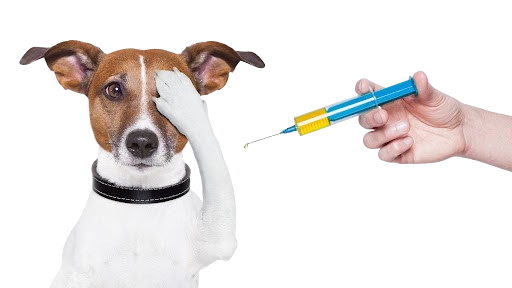
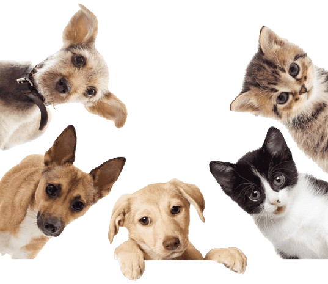
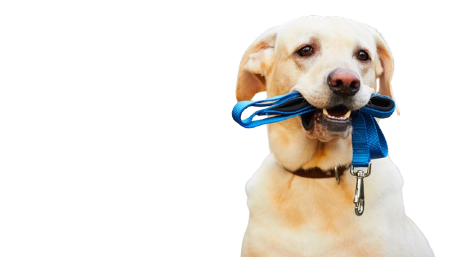
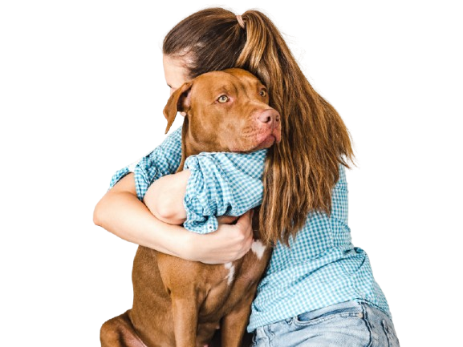

Sistema Vida Pet
Manual do usuário
O Vida Pet é um sistema que ajudará os tutores a organizar os cuidados
com seus animais de estimação, mantendo a saúde e a rotina sempre atualizados.
Para facilitar ainda mais a experiência do usuário, o sistema conta com:
-Crud de animais de estimação
-Cadastro de Eventos e Cuidados
-Metas de Saúde e Bem-Estar
-Sugestões Personalizadas de Cuidado
-Cadastro do Dono(a)
Grupo 11:
Bernardo Guimarães
Luiza Barbosa
Arthur Reis
Filipe Correia
João Arthur
Adicionar
Para adicionar, é necessário que o usuário insira o número "1" do crud. Logo em seguida, ele preencherá os nomes dos pets, as espécies, as raças, os nascimentos e os pesos. Cada um desses dados serão armazenados em suas respectivas listas, possibilitando uma maior organização e praticidade ao manipulá-los.
Visualizar
Para visualizar, é necessário que o usuário insira o número "2" do crud. Ao fazê-lo, será possível ler e visualizar todas as informações, permitindo que o tutor consiga ter acesso a tudo aquilo que já foi anteriomermente adicionado/registrado por ele.
Atualizar
Para atualizar, é necessário que o usuário insira o número "3" do crud. Após isso, o usuário deverá informar qual pet ele deseja atualizar e, em seguida, qual das informações ele precisa/deseja editar. Cada possibilidade (nome, espécie, raça, nacimento ou peso) leva a sua respectiva lista, e é a partir da manipulação dessas listas que será possível fazer as devidas atualizações. Caso o usuário insira uma opção fora das anteriormente listadas, ele será alertado e conseguirá refazer o processo.
Deletar
Para deletar, é necessário que o usuário insira o número "4" do crud. Isso possibilitará que o usuário insira qual pet deseja excluir e, de fato, deletar o animalzinho.
Crud de animais de estimação
O menu de pets se inicia com o usuário definindo qual local ele prefere armazenar as informações do seu pet. Ele pode:
-Criar uma nova pasta
-Armazenar em uma pasta já existente (caso essa opção seja escolhida, é possível importar as informações dos pets que já foram inseridos anteriormente).
Em seguida, o usuário pode escolher dentre as opções do crud:
1- Adicionar
2- Visualizar (listar pets)
3- Atualizar
4- Deletar
0- Voltar
Todo o crud será armazenado em arquivo de texto, permitindo que todas as informações fiquem registradas e não se percam. Cada pet terá seu próprio arquivo.
Cadastro de Cuidados e Eventos
Nessa parte do sistema, o membro da família que estiver utilizando o programa poderá fazer registros de eventos importantes como: vacinações, consultas veterinárias e aplicação de remédios. o membro deve informar as datas, o nome do pet, nome do responsável e as observações. Todas essas informações serão devidamente registradas em um "menu" que terá as seguintes opções:
Cadastrar o Evento
1º- O membro da família deverá adicionar qual o tipo de evento que estará cadastrando o pet. Esses eventos estarão em um dicionário que contará com listas para cada evento. Caso o evento não esteja dentro desse dicionário, o usuário receberá uma mensagem avisando que o evento é inválido.
2- O familiar deve inserir a data do evento, o nome do pet, o nome do responsável e as observações. Em seguida, ele receberá uma mensagem "o evento foi cadastrado com sucesso."
Exibir Evento
O membro da família terá acesso e conseguirá visualizar todas as informações cadastradas do evento (as informações contidas nas listas dos eventos que estão no dicionário)
Metas de Saúde e Bem-Estar
O sistema também possibilitará que os tutores consigam definir e acompanhar suas metas. Para isso, o tutor definirá através de um input quais serão suas metas e, posteriomermente, fornecerá dados que permitirão fazer o acompanhamento das respectivas metas.
É possível na parte de metas:
1- Adicionar uma meta (Permite adicionar as metas que o tutor deseja cumprir).
2- Listar metas (Visualizar e fazer o acompanhamento das metas).
3- Atualizar (Permite que o usuário atualize o progresso das metas ou as troque).
4- Deletar (Permite que o usuário delete uma meta).
0- Voltar
As informações salvas também serão armazenadas em arquivos de texto.
.png)
Sugestões Personalizadas de Cuidado
Essa parte do sistema permite que sugestões sejam feitas baseadas na espécie e na idade do animalzinho. Para isso, adicionamos uma função que possibilita fazer sugestões baseando-se na idade do pet e em sua espécie. Algumas das sugestões que podem ser feitas são:
1-Brinquedos
Exemplo:
Espécie do pet: Cachorro
Idade do pet (em anos): 1
A sugestão para um cachorro de 1 ano é comprar brinquedos de borracha macia para o filhote se divertir, sem medo de machucar os dentinhos!
2-Alimentos recomendados
Exemplo:
Espécie do pet: Gato
Idade do pet (em anos): 2 anos
A sugestão de alimentação para um gato de 2 anos é oferecer a ração adulta, pois ele já completou seu desenvolvimento e não precisa mais dos nutrientes específicos para o crescimento rápido que estão presentes na ração filhote.
3-Exercícios adequados
Exemplos:
Espécie do pet: Gato
Idade do pet (em anos): 5 anos
A sugestão de exercícios para um gato de 2 anos são brincadeiras ativas. Um gato de 5 anos está na fase adulta e ainda é ativo, por isso precisa de atividades que estimulem tanto o corpo quanto a mente.
Cadastro do Dono(a)
Essa é a funcionalidade extra do Vida Pet! Ela permite que o tutor também se cadastre no sistema, possibilitando que, antes de fazer suas escolhas, o usuário faça seu login. Essa funcionalidade conta com o cadastro inicial (login e senha). Todas essas informações serão contidas em uma pasta chamada "clientes", em que, a cada login, uma pasta será criada e possibilitará que o usuário entre no sistema Vida Pet.
Voltar ao Menu Principal
Nessa opção o usuário consegue retornar ao menu principal, encerrando o cadastro de cuidados e eventos.
Caso seja feita uma escolha diferente das válidas, o usuário receberá uma mensagem instruindo-o a escolher dentre as opções válidas.
Excluir evento
Nessa opção o usuário consegue excluir o evento escolhido pelo usuário.